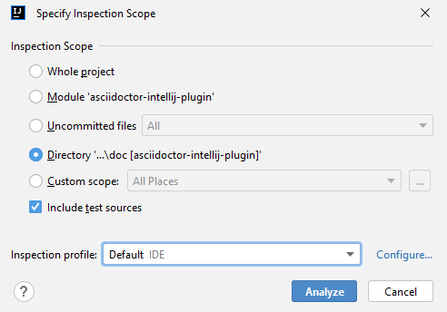
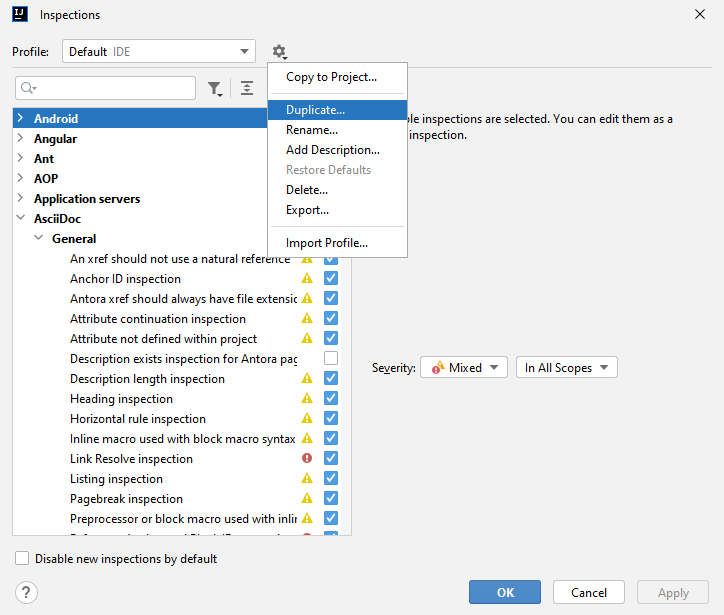
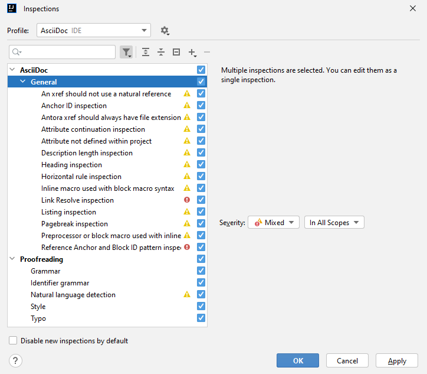
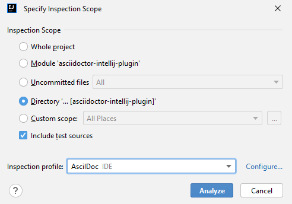
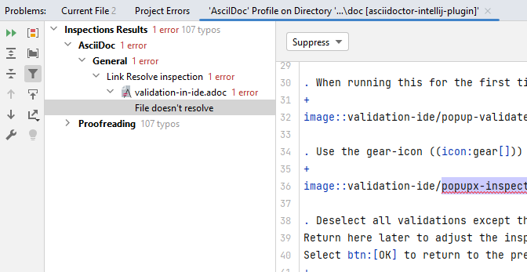

Validation in the IDE
Validate a project or a set of files in one go.
Use Inspect Code to validate AsciiDoc content
When users write AsciiDoc content in the editor, the IDE will highlight problems in the editor. Different plugins will show different warnings:
-
AsciiDoc Plugin: shows, for example, broken images and deprecated syntax.
-
Grazie and Grazie Professional plugins: show spelling, style and grammar problems.
To review problems in all files or a subset of files in a project, the IDE offers the functionality Inspect Code.
The following paragraph provides the step-by-step instructions for this.
Running the inspection for a project
As a pre-requisite when running grammar inspections in large projects, increase the memory of the IDE as the IDE might otherwise be slow, or stall due to the lack of memory. Choose menu item and change this, for example, to 4096 MB.
Then follow these steps to validate files in a project. Use the icon to read the docs of the IDE to find out about additional functionality in each dialog.
-
Select a folder in the project view with documents to inspect, for example, doc.
-
Select the menu item .
-
In the pop-up window, the directory is preselected. Keep this selection, or choose a different scope or the whole project depending on where files should be inspected.
New in plugin version 0.37.55+: The plugin also adds two custom scopes: Project files without Symlinks, AsciiDoc files and AsciiDoc files without Symlinks, which are applied to the whole project. The scope without symlinks avoids validating a file multiple times with duplicate error messages. In this scope, it will only be validated once in its original location. While this avoids duplicate error messages, it might also hide error messages that are context dependent on the symlink location.
-
When running this for the first time, select Configure… to select which kind of checks to run.
 -
To create a custom profile, use the gear-icon to duplicate the default inspection. For this example, after duplicating the default inspection, enter the name AsciiDoc and press Enter.
 -
Deselect all inspections except the AsciiDoc and Proofreading inspections to restrict the type of checks. Return here later to adjust the inspections to suit the project. After updates of IntelliJ or its plugins, revisit the profile to see if new inspections are available. Select OK to return to the previous pop-up.
 -
Select the AsciiDoc inspection profile and press Analyze.
 -
The IDE then shows a tool window with all problems found in the search. Depending on the size of the project and the inspections selected, the inspection might take some time. Use the icons on the left to re-run the analysis, expand or collapse all groups, navigate to the previous or next problem in the list, or change the inspection profile.
